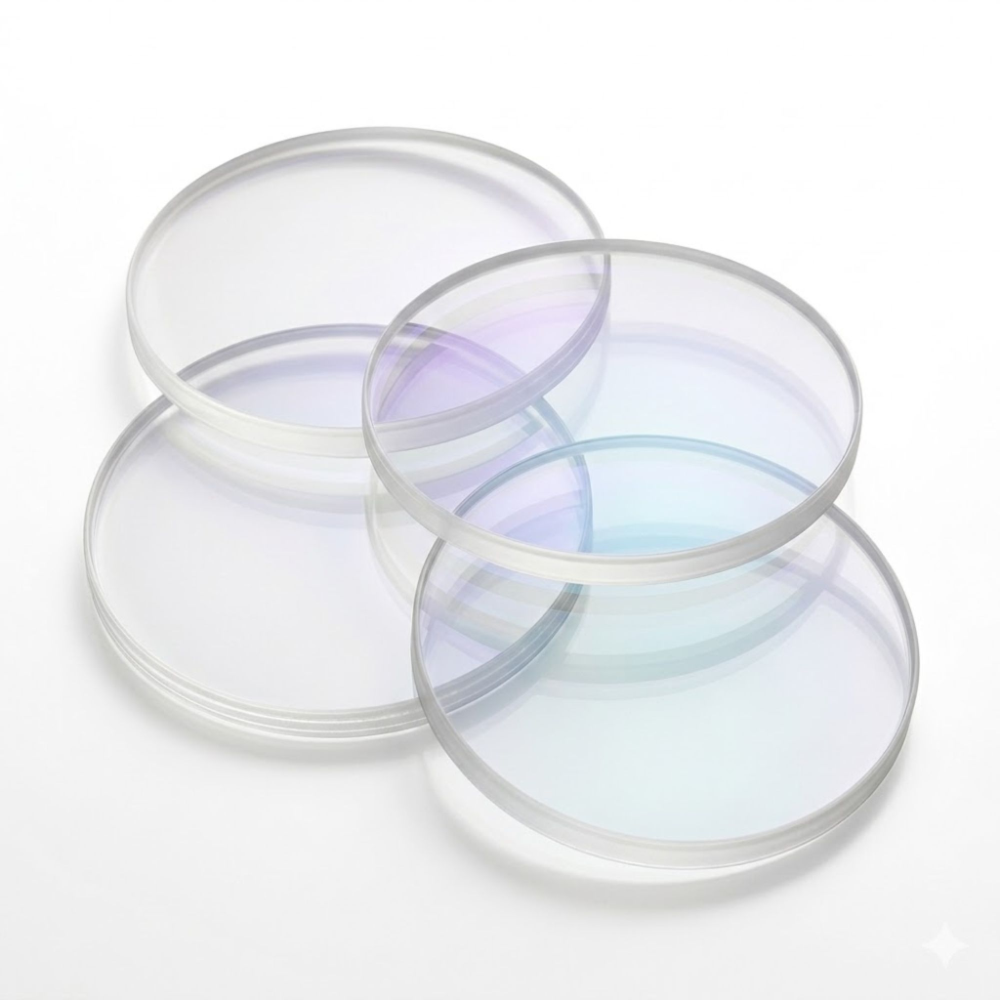
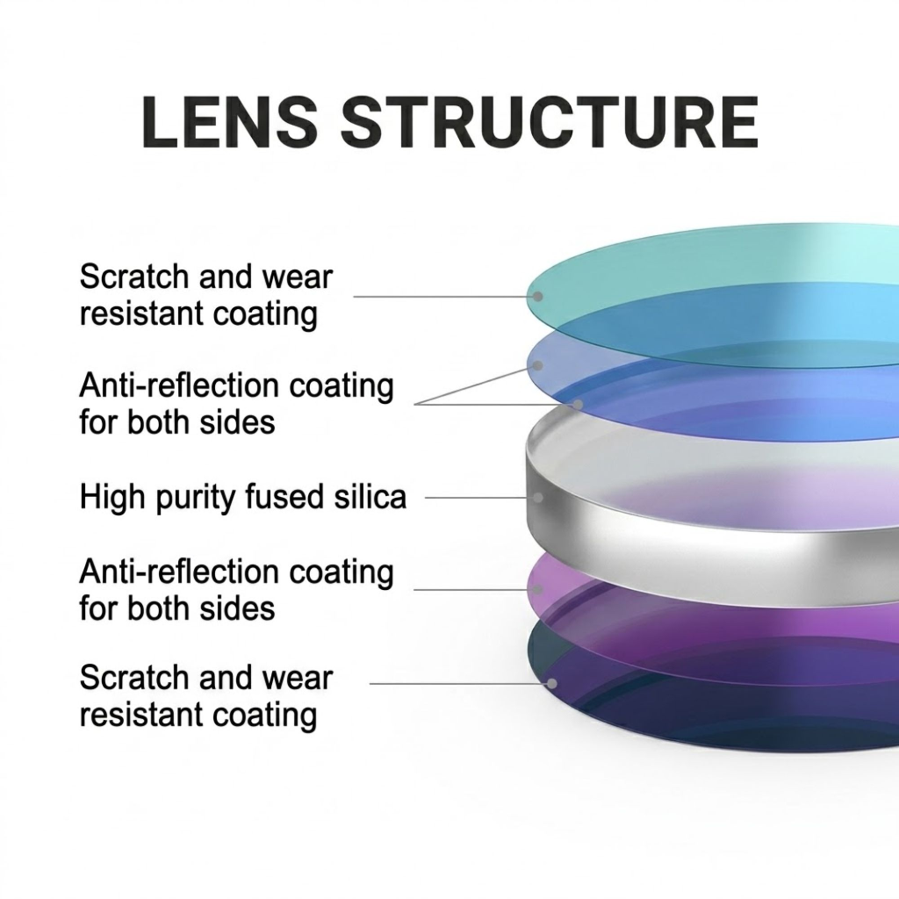
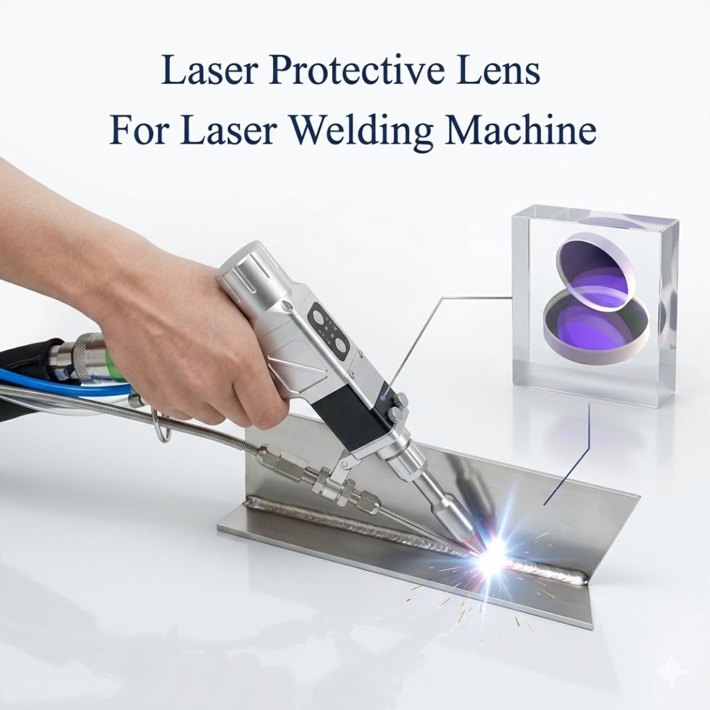
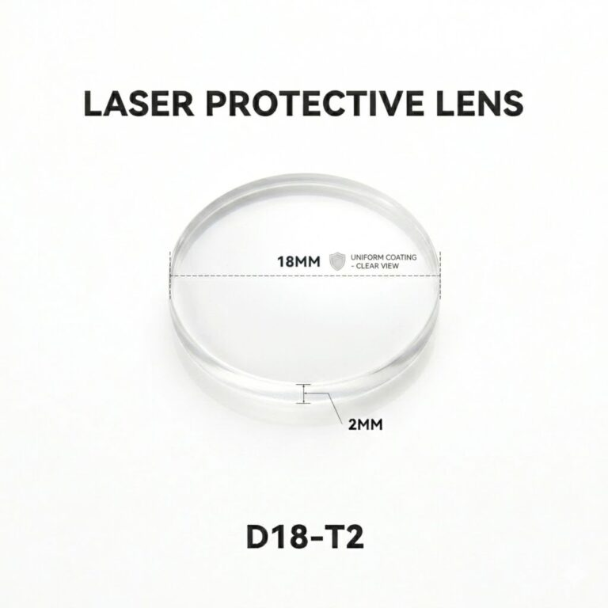

Overview of the Aoura D18×2mm Protective Lens
Aoura Products has officially announced the launch of its high-precision Laser Protective Lens D18×2mm, specifically designed for handheld fiber laser welding systems. Operating as a critical consumable, these lenses serve as a defensive barrier, protecting the internal optical system of laser welding heads from high-velocity spatter, heat, dust, and smoke generated during industrial fabrication processes.
Handheld fiber laser welding has seen widespread adoption across UAE workshops, automotive fabrication units, and sheet metal factories. However, the operational lifespan of these high-power machines depends heavily on regular maintenance of their optical paths. The new Aoura D18×2mm protective window lenses provide a cost-effective, premium-quality replacement solution, ensuring that manufacturing companies can sustain continuous operations with minimal machine downtime.
Key Features & Advanced Optical Materials
Every Aoura lens is engineered to withstand demanding workshop environments. Built using high-purity fused silica, the lenses are designed to handle the thermal stresses of high-power laser welding without cracking or degrading. Key attributes include:
- High Transmission Rate: Minimises beam distortion and guarantees maximum power delivery to the weld site.
- Double-Sided Anti-Reflection Coating: Optimised specifically for the 1064nm infrared wavelength, ensuring minimal back-reflection and preserving internal laser components.
- Scratch & Wear Resistance: Dual-sided protective layers extend the working life of the consumable, reducing the frequency of replacements.

Universal Machine Compatibility
Designed for versatile deployment, the D18×2mm dimensions ensure a secure, flush fit inside standard 18mm lens housings. The lenses are fully compatible with fiber lasers ranging from 1000W to 3000W, covering the most common power ratings used in commercial sheet metal and structural fabrication. This includes compatibility with popular 4-in-1 handheld welders, Raycus, Maxphotonics, and IPG laser sources.

Technical Specifications
Below is the detailed technical configuration for the Aoura Laser Protective Lens (SKU: LPL-D18-2MM-15PCS):
| Specification Parameter | Detail Value |
|---|---|
| Diameter | 18mm (D18) |
| Thickness | 2mm (T2) |
| Wavelength | 1064nm (optimized for fiber lasers) |
| Material Type | Optical-grade high purity fused silica |
| Laser Compatibility | 1000W, 1500W, 2000W, 3000W Fiber Lasers |
| Coating | Anti-reflection (AR) on both sides |
| Packaging | Pack of 3 protective window lenses |

Maintenance & Easy Replacement Guide
Regular lens inspection is the single most effective way to extend the lifespan of your laser welding head and preserve beam quality. Fabricators are advised to inspect the protective window before every shift:
- Power off the laser source and clean the exterior of the welding head to prevent dust ingress.
- Remove the lens holder/slide drawer using standard tool-free steps.
- Inspect the lens for spatter marks, burn spots, or cloudiness.
- Replace immediately if thermal damage or structural wear is visible, keeping your beam clean and power delivery stable.
Direct Ordering & UAE Delivery
Aoura Products ships all orders directly from its distribution hub in Dubai, UAE. To support local fabricators, we offer Free Delivery across all UAE emirates (including Dubai, Abu Dhabi, Sharjah, Ajman, Ras Al Khaimah, Fujairah, and Umm Al Quwain) with no minimum order requirements. Orders placed before 2:00 PM are dispatched same-day for rapid transit.
The product is sold in a value Pack of 3 lenses for 54 AED (VAT and free shipping included).
Interested buyers and procurement managers can place orders directly through the Aoura Group E-commerce Shop or contact customer support via WhatsApp or email (customer@aouragrp.com) for bulk quotation requests.